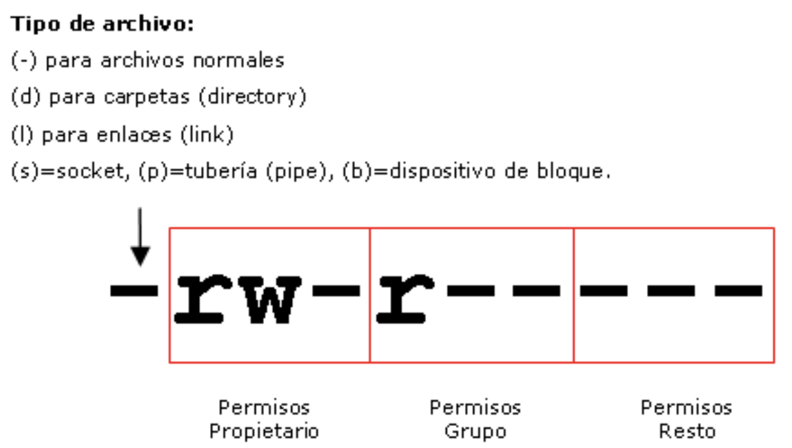
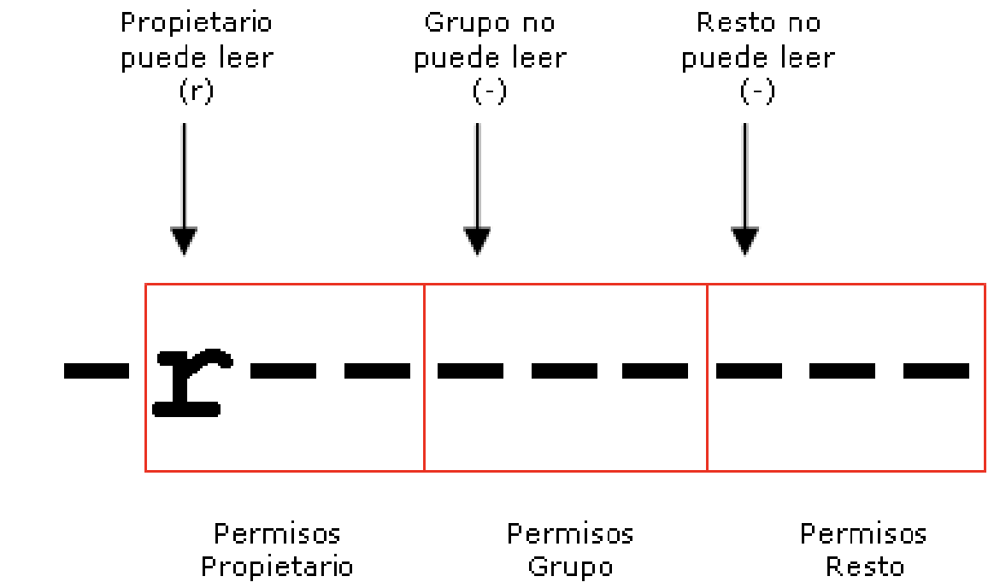
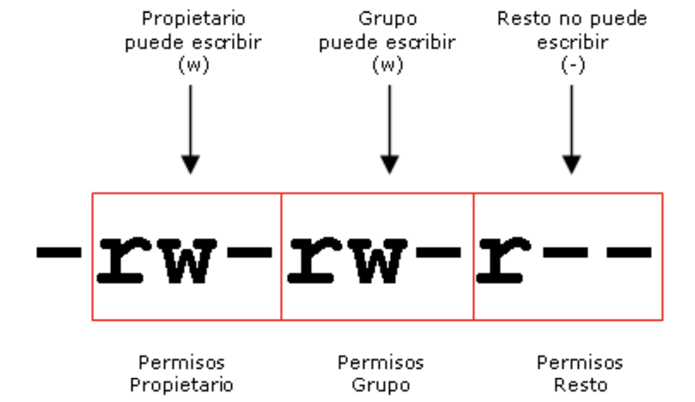
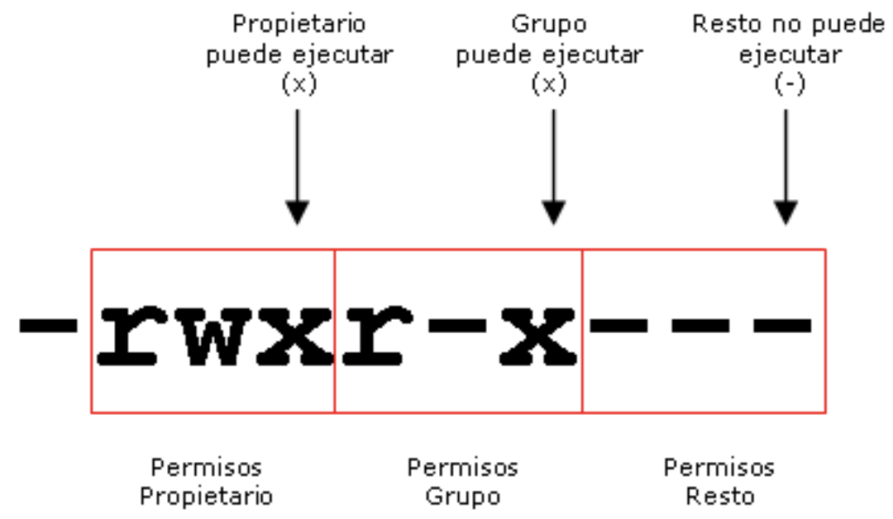

Unidad 3 - Administración de Lubuntu
Introducción
La administración de un sistema GNU/Linux (Lubuntu) es amplia y no se centraliza en una sola herramienta. En la práctica se combinan comandos en terminal con utilidades gráficas. Mientras que las GUIs varían entre distribuciones y entornos (en Lubuntu, Centro de configuración de LXQt y herramientas afines), los comandos suelen ser comunes. De hecho, muchas GUIs actúan como front-end de utilidades CLI mediante PolicyKit (pkexec) para elevar privilegios cuando es necesario.
Las tareas de administración requieren privilegios elevados. En Linux el superusuario es root, cuya sesión directa suele estar deshabilitada por defecto. En su lugar, la administración se realiza con sudo: cualquier usuario perteneciente al grupo sudo puede ejecutar acciones administrativas.
Cuando una aplicación gráfica necesita permisos, el sistema mostrará un cuadro de autenticación (polkit) para introducir la contraseña del usuario autorizado. En terminal, se antepone sudo al comando que requiera privilegios. Tras autenticarse, sudo mantiene un “ticket” temporal (por defecto, unos 15 minutos) y no vuelve a pedir la contraseña hasta que caduque; este tiempo es configurable en /etc/sudoers (editar siempre con visudo).
Ejemplo (listar particiones del sistema):
Usuario y grupos
Linux (y por extensión Lubuntu) es multiusuario: varias personas (o servicios) pueden iniciar sesión a la vez, localmente o por acceso remoto. Por eso, crear, mantener y auditar cuentas es una tarea habitual de administración. Además de personas, muchos servicios del sistema usan cuentas propias para acotar privilegios.
Bases de datos de usuarios y grupos
La información de cuentas y grupos se almacena en ficheros de texto gestionados por la libc (consultables también con getent):
- /etc/passwd: usuarios (nombre, UID, GID principal, comentario, home, shell).
- /etc/shadow: contraseñas cifradas y políticas (solo legible por root).
- /etc/group: grupos y sus miembros.
- /etc/gshadow: contraseñas/administración de grupos (solo root).
Tipos de cuentas
- root: superusuario (UID 0). Tiene control total del sistema. No se recomienda usarlo para trabajo diario; se opera con sudo desde cuentas normales.
- Cuentas del sistema: usadas por servicios y demonios (p. ej., daemon, lp, www-data, _apt, systemd-timesync, etc.). Suelen tener contraseña bloqueada y shell no interactiva (/usr/sbin/nologin), de modo que no están pensadas para iniciar sesión.
- Usuarios estándar: cuentas de personas que sí inician sesión y trabajan en el sistema.
Identificadores de usuario y de grupo (UID/GID)
Cada cuenta tiene un UID único y cada grupo un GID. En Debian/Ubuntu/Lubuntu se emplean por defecto estos rangos (configurables en /etc/login.defs):
- UID 0 → root.
- 1–999 → cuentas del sistema.
- ≥ 1000 → usuarios estándar (valor por defecto de UID_MIN = 1000).
- El usuario nobody suele tener UID 65534 y el grupo nogroup GID 65534 (mínimos privilegios).
Cuando creas un usuario nuevo, el sistema suele crear también su grupo privado con el mismo número (UID=GID), lo que facilita la gestión de permisos.
Archivo /etc/passwd
Contiene las cuentas de usuario registradas. Es un fichero de texto donde cada línea es un usuario y los campos están separados por dos puntos :.
Formato (7 campos):
- Login → nombre de la cuenta (único).
- Contraseña → normalmente x (la contraseña real está en /etc/shadow).
- UID → identificador numérico del usuario (único).
- GID → identificador del grupo principal del usuario.
- Comentario (GECOS) → suele incluir el nombre completo u otros datos.
- HOME → directorio personal.
- Shell → intérprete de comandos (p. ej., /bin/bash o /usr/sbin/nologin).
Gestión de usuarios
Crear usuarios: useradd
useradd añade una nueva cuenta al sistema. Requiere privilegios y, por seguridad, la cuenta recién creada queda sin contraseña (bloqueada para inicio de sesión) hasta que se le asigne una con passwd. En Debian/Ubuntu/Lubuntu suele recomendarse adduser (asistente interactivo). Aun así, useradd es la herramienta de bajo nivel estándar.
Sintaxis
Parámetros
- login Nombre (único) de la nueva cuenta.
Opciones habituales
- -c, --comment "texto" Comentario/GECOS (p. ej., nombre completo). Si hay espacios, entre comillas.
- -d, --home
Ruta del HOME. Si no existe y usas -m, se crea y se puebla desde /etc/skel. - -e, --expiredate
Fecha en la que la cuenta expira (queda deshabilitada). - -f, --inactive
Días de inactividad tras expirar la contraseña antes de desactivar la cuenta. - -g, --gid
- -G, --groups
- -m, --create-home Crea el directorio HOME si no existe (copiando plantillas de /etc/skel).
- -M No crear el HOME (incluso si la configuración lo permitiría).
- -s, --shell
Shell de inicio (p. ej., /bin/bash, /usr/sbin/nologin). - -u, --uid
UID explícito (único y no negativo). - -r, --system Crea una cuenta del sistema (UID en rango de sistema, sin login interactivo).
Ejemplos
# Alta básica con HOME y grupos suplementarios
sudo useradd -m -c "María López" -s /bin/bash -G sudo,lpadmin mlopez
sudo passwd mlopez # establecer contraseña (habilita login)
# Crear con HOME personalizado y caducidad de cuenta
sudo useradd -m -d /srv/apps/appuser -e 2026-12-31 -s /usr/sbin/nologin appuser
# Especificar grupo principal existente y UID concreto
sudo useradd -m -u 1501 -g docentes -G audio,video -s /bin/bash pserrano
sudo passwd pserrano
Modificar cuentas: usermod
usermod modifica propiedades de una cuenta existente (requiere privilegios). Úsalo para cambiar shell, grupos, HOME, caducidad, bloqueo, etc.
Sintaxis
Parámetros
- login Nombre actual de la cuenta a modificar.
Opciones habituales
- -c, --comment "texto" Cambia el campo GECOS (p. ej., nombre completo).
- -d, --home DIR Establece nuevo HOME.
- -m, --move-home Mueve el contenido del HOME actual a DIR (usar junto a -d).
- -e, --expiredate AAAA-MM-DD Fecha en que la cuenta expira (queda deshabilitada).
- -f, --inactive DÍAS Días de gracia tras caducar la contraseña antes de desactivar la cuenta.
- -g, --gid GRUPO|GID Cambia el grupo principal (debe existir).
- -G, --groups g1,g2,... Sustituye los grupos suplementarios por la lista indicada.
- -a, --append Añade a los grupos indicados en -G (sin reemplazar los existentes).
- -l, --login NUEVO Renombra el login (no renombra el HOME salvo que uses -d -m).
- -s, --shell /ruta/shell Cambia la shell de inicio (p. ej., /bin/bash, /usr/sbin/nologin).
- -u, --uid UID Cambia el UID (evita colisiones; revisa propiedad de archivos).
- -L, --lock Bloquea la contraseña (añade ! al hash en /etc/shadow).
- -U, --unlock Desbloquea la contraseña.
Ejemplos
# Añadir a grupos sin perder los actuales
sudo usermod -aG audio,video mlopez
# Cambiar shell
sudo usermod -s /bin/bash alumno1
# Cambiar grupo principal
sudo usermod -g docentes pserrano
# Mover HOME a nueva ruta
sudo usermod -d /srv/users/mlopez -m mlopez
# Caducar cuenta en una fecha
sudo usermod -e 2026-06-30 contratada
# Bloquear / desbloquear inicio por contraseña
sudo usermod -L temporal; sudo usermod -U temporal
# Renombrar login (y HOME a juego)
sudo usermod -l marta.lopez mlopez
sudo usermod -d /home/marta.lopez -m marta.lopez
Eliminar cuentas: userdel
userdel elimina una cuenta de usuario. Requiere privilegios. Por defecto no borra el directorio HOME ni otros archivos del usuario repartidos por el sistema.
Sintaxis
Parámetros
- login Nombre de la cuenta a eliminar.
Opciones
- -r, --remove Borra el HOME del usuario (si existe).
- -f, --force Fuerza el borrado aunque el usuario tenga sesión activa y elimina el HOME incluso si no es propiedad del usuario.
Ejemplos
# Borrado seguro (sin sesiones activas), conservando HOME
sudo userdel alumno1
# Borrar cuenta y su HOME
sudo userdel -r alumno1
# Si sigue con procesos abiertos, terminar y borrar
loginctl terminate-user alumno1 # o pkill -u alumno1
sudo userdel -r alumno1
Alta “amigable” y grupos: adduser y addgroup (Debian/Ubuntu/Lubuntu)
En Debian/Ubuntu, adduser y addgroup son front-ends más interactivos y seguros que useradd/groupadd. Preguntan los datos necesarios y crean HOME con las plantillas de /etc/skel (salvo que se indique lo contrario).
Modos de uso
- Crear usuario normal (interactivo): sudo adduser login
- Crear usuario de sistema (sin login interactivo, sin contraseña): sudo adduser --system [--no-create-home] [--home DIR] login
- Crear grupo: sudo addgroup grupo
- Crear grupo de sistema: sudo addgroup --system grupo
- Añadir usuario existente a grupo existente: sudo adduser login grupo
Sintaxis
Opciones habituales
- --home DIR Establece HOME (lo crea y copia /etc/skel, salvo --no-create-home).
- --no-create-home No crear HOME.
- --shell SHELL Shell de inicio (p. ej., /bin/bash).
- --ingroup GRUPO Grupo principal (en vez de crear uno privado).
- --gid GID GID del grupo creado / asignado.
- --uid UID UID específico para el usuario.
- --system Crear usuario/grupo de sistema.
Ejemplos
# Usuario normal con HOME, shell bash y grupo adicional 'lpadmin'
sudo adduser mlopez
sudo adduser mlopez lpadmin
# Usuario normal con grupo principal existente y HOME personalizado
sudo adduser --ingroup docentes --home /srv/users/mlopez --shell /bin/bash mlopez
# Usuario de sistema para servicio, sin HOME ni login
sudo adduser --system --no-create-home --shell /usr/sbin/nologin appsvc
sudo addgroup --system appsvc
sudo adduser appsvc appsvc # asegurarlo en su grupo
# Crear grupo y añadir varios usuarios
sudo addgroup proyectos
sudo adduser ana proyectos
sudo adduser juan proyectos
Administración de contraseñas
Cambiar y gestionar contraseñas: passwd
passwd permite cambiar la contraseña de un usuario y ajustar sus políticas de caducidad. Un usuario estándar solo puede cambiar su propia clave; root puede gestionar la de cualquier cuenta.
Al ejecutarlo, si cambias tu propia clave, pide la contraseña actual y luego solicita la nueva dos veces. Si las entradas coinciden y cumplen la política de PAM (longitud, complejidad, historial…), se actualiza en /etc/shadow.
Sintaxis
Parámetros
- login Usuario cuyo secreto se gestiona. Si se omite, actúa sobre la cuenta en curso.
Opciones principales
- -d, --delete Elimina la contraseña (deja la cuenta sin clave). Úsese con cautela.
- -e, --expire Expira ahora la contraseña para forzar el cambio en el próximo inicio de sesión.
- -i, --inactive DÍAS Días de gracia tras expirar la clave; después, la cuenta queda deshabilitada.
- -l, --lock Bloquea la contraseña (antepone ! al hash en /etc/shadow). Impide login por contraseña.
- -u, --unlock Desbloquea la contraseña (retira el bloqueo).
- -n, --mindays DÍAS Mínimo de días entre cambios.
- -x, --maxdays DÍAS Máximo de días que una contraseña puede permanecer sin cambiar.
- -w, --warndays DÍAS Días de aviso antes de la expiración.
- -S, --status Muestra el estado de la cuenta/clave de forma resumida.
Ejemplos
# Cambiar TU propia clave
passwd
# Forzar a un usuario a cambiar la contraseña en el próximo login
sudo passwd -e alumno1
# Bloquear y desbloquear contraseña de una cuenta
sudo passwd -l practicas
sudo passwd -u practicas
# Dejar una cuenta sin contraseña (solo en entornos controlados)
sudo passwd -d laboratorio
# Políticas de caducidad
sudo passwd -x 90 -w 7 -n 1 profesor1 # máx 90 días, aviso 7, mínimo 1 día
# Ver estado
sudo passwd -S profesor1
Gestión de grupos
Crear grupos: groupadd
groupadd crea un nuevo grupo en el sistema.
Sintaxis
Parámetros
- grupo Nombre del grupo a crear.
Opciones
- -g, --gid GID Establece el GID del grupo.
- -r, --system Crea un grupo del sistema.
Ejemplos
Modificar grupos: groupmod
groupmod modifica los atributos de un grupo existente.
Sintaxis
Parámetros
- grupo Nombre actual del grupo.
Opciones
- -g, --gid GID Cambia el GID.
- -n, --new-name nuevo_nombre Renombra el grupo.
Ejemplos
Eliminar grupos: groupdel
groupdel borra un grupo.
Sintaxis
Parámetros
- grupo Nombre del grupo a eliminar.
Ejemplos
Gestionar membresías/contraseñas: gpasswd
gpasswd administra grupos y sus contraseñas. Sin opciones, establece la contraseña del grupo (raro en estaciones de trabajo; se prefiere gestionar membresías).
Sintaxis
Parámetros
- grupo Grupo a gestionar.
Opciones
- -a, --add login Añade el usuario al grupo.
- -d, --delete login Quita el usuario del grupo.
- -r, --remove-password Elimina la contraseña del grupo.
Ejemplos
# Añadir/quitar miembros
sudo gpasswd -a ana proyectos
sudo gpasswd -d ana proyectos
# Establecer/eliminar contraseña de grupo (uso poco común)
sudo gpasswd proyectos
sudo gpasswd -r proyectos
Cambiar el grupo principal temporalmente: newgrp
newgrp inicia una nueva sesión de shell cambiando el grupo por defecto del usuario al indicado.
Sintaxis
Parámetros
- grupo Grupo al que unirse como principal.
Opciones
-
- Re-inicializa el entorno como si fuera un login shell.
Comportamiento
- Si el usuario no figura como miembro en /etc/gshadow, se pedirá la contraseña del grupo.
- Si ya es miembro (listado en /etc/gshadow), no se pedirá contraseña.
Ejemplos
Permisos de archivo
En Unix/Linux (Lubuntu incluido) los permisos se basan en un modelo simple y eficiente: tres tipos de permiso —lectura (r), escritura (w) y ejecución (x)— aplicados a tres clases de sujetos: propietario, grupo y otros. Este esquema cubre la mayoría de necesidades con administración directa y bajo coste. Cuando se requiere granularidad adicional, pueden usarse ACL POSIX (permisos extendidos), aunque el modelo básico rwx suele bastar en entornos docentes y de laboratorio.
Propietario y grupo de un archivo
En Linux todo archivo pertenece a un usuario y a un grupo. Cuando un usuario crea un archivo:
- El propietario será ese usuario.
- El grupo será su grupo principal en ese momento.
Ejemplo: si el usuario maria (con grupo principal maria) crea un archivo, este pertenecerá a usuario maria y grupo maria.
Para ver propietario y grupo, usa el listado largo de ls:
Salida de ejemplo:
-rw-r--r-- 1 maria maria 4096 2026-01-14 informe.txt
drwxr-xr-x 2 maria alumnos 4096 2026-01-10 ejercicios
Lectura rápida de columnas:
- -rw-r--r-- / drwxr-xr-x → tipo y permisos (rwx para propietario, grupo y otros).
- 1 → enlaces duros.
- maria → usuario propietario.
- maria / alumnos → grupo propietario.
- 4096 → tamaño (bytes).
- fecha → última modificación.
- informe.txt / ejercicios → nombre (archivo / directorio).

Permisos de lectura

Archivos:
- Con r puedes abrir y leer el contenido (p. ej., con cat, less, un editor).
- No autoriza cambios: para modificar se requiere w (y para ejecutar, x).
Directorios:
- Con r puedes listar los nombres que contiene el directorio (p. ej., ls).
- Para entrar en el directorio y acceder a metadatos o a los archivos que contiene, se necesita además x (traversal).
- Casos típicos:
- r + x: puedes listar con detalles (ls -l), acceder a subrutas y abrir ficheros (si sus permisos lo permiten).
- Solo r (sin x): puedes ver los nombres, pero no “entrar” ni obtener detalles (ls -l dará Permission denied para cada entrada).
- Solo x (sin r): no puedes listar; si conoces el nombre exacto y tienes permisos en el archivo, podrás abrirlo.
Ejemplos:
# Archivo con lectura
cat documento.txt # muestra contenido si tienes 'r' sobre el archivo
# Directorio con r sin x
ls carpeta/ # lista NOMBRES
ls -l carpeta/ # falla al detallar: Permission denied
# Directorio con x sin r
ls carpeta/ # no lista (Permission denied)
cat carpeta/known.txt # funciona si conoces el nombre y tienes 'r' en el archivo
Permisos de escritura

Archivos:
- Con w se puede modificar el contenido (editar, truncar, sobrescribir).
- No otorga por sí mismo la posibilidad de borrar el archivo ni de cambiar sus permisos o propietarios:
- Borrar un archivo depende de los permisos del directorio padre (ver abajo).
- Cambiar permisos (chmod) requiere ser propietario (o tener privilegios).
- Cambiar propietario/grupo (chown/chgrp) requiere privilegios (o condiciones específicas en chgrp).
Directorios:
- Con w puedes crear, eliminar y renombrar entradas dentro del directorio.
- Para que tenga efecto práctico suele necesitarse también x (traversal) sobre el directorio.
- Borrar un archivo requiere w + x en el directorio que lo contiene, no w en el propio archivo.
Ejemplos:
# Editar (requiere 'w' en el archivo)
echo "hola" >> notas.txt
# Crear y borrar dentro de un directorio (requiere 'w' y 'x' en el directorio)
touch carpeta/nuevo.txt
rm carpeta/nuevo.txt
# Caso típico: sin 'w' en el directorio no puedes borrar aunque el archivo tenga 'w'
chmod 644 carpeta/archivo.txt # rw- r-- r-- (el archivo es escribible por su dueño)
chmod 555 carpeta # r-x r-x r-x (sin 'w' en el directorio)
rm carpeta/archivo.txt # Permission denied
Permisos de ejecución

Archivos:
- Con x puedes ejecutar el archivo (binario ELF o script con shebang, p. ej. #!/bin/bash).
- Sin x, aunque el archivo sea una aplicación o tenga contenido ejecutable, obtendrás Permission denied.
- En scripts es habitual necesitar x y, según el caso, también r (el intérprete debe poder leer el fichero).
- En Lubuntu (PCManFM-Qt) el permiso se gestiona desde las propiedades del archivo (“Permitir ejecutar el archivo como un programa”).
Directorios:
- Con x puedes entrar al directorio (cd) y acceder a objetos internos si conoces sus nombres.
- Para listar nombres necesitas además r.
- x sin r: no puedes listar, pero si sabes el nombre exacto y el archivo lo permite, podrás abrirlo.
- r sin x: verás los nombres, pero no podrás “entrar” ni acceder a su contenido.
Ejemplos:
# Hacer ejecutable un script y ejecutarlo
chmod +x backup.sh
./backup.sh
# Directorio con x pero sin r: no lista, pero accede si conoces el nombre
chmod 111 carpeta/
ls carpeta/ # Permission denied
cat carpeta/known.txt # funciona si tienes permisos en el archivo
# Directorio con r y x: listar y acceder
chmod 755 proyectos/
ls -l proyectos/
¿A quién ortorgar permisos?
En el modelo básico de permisos de Unix/Linux los permisos se asignan únicamente a tres clases:
- u → propietario del archivo
- g → grupo propietario
- o → otros (todos los demás usuarios)
A cada clase se le pueden conceder combinaciones de r (lectura), w (escritura) y x (ejecución).
Ejemplo:
Archivo documento.txt con propietario maria y grupo maria
Aquí:
- u (maria) tiene rw-
- g (maria) tiene r--
- o no tiene permisos
Para ajustar estos permisos con el modelo básico:
# Propietario lectura/escritura, grupo solo lectura, otros sin acceso
chmod 640 documento.txt
# Si quieres que “el grupo correcto” tenga acceso, cambia el grupo propietario
chgrp alumnos documento.txt # ahora 'g' aplica al grupo 'alumnos'
Permisos de archivos y directorios: chmod
chmod cambia los permisos.
Sintaxis
Modos
- Simbólico: u+rx, g-w, o=r, a-x, u=rwx,g=rx,o=rx, X (aplica x solo a directorios o archivos ya ejecutables).
- Octal: r=4, w=2, x=1 ⇒ 755 (= rwxr-xr-x), 644 (= rw-r--r--).
Opciones
- -R Recursivo.
- -v Verboroso.
Bits especiales (avanzado)
- setuid (4xxx), setgid (2xxx), sticky (1xxx). Ej.: /tmp suele ser 1777.
Ejemplos
chmod 644 documento.txt # rw-r--r--
chmod u+x script.sh # añade ejecución al dueño
chmod -R u=rwX,g=rX,o= proyecto/ # permisos limpios por árbol
chmod 1777 /tmp # sticky bit (solo dueño borra)
Propietario y grupo: chown (y chgrp)
chown cambia propietario y/o grupo.
Sintaxis
chown [opciones] [--] usuario[:grupo] archivo ...
chown [opciones] [--] :grupo archivo ... # solo grupo
Opciones
- -R Recursivo.
- -h No seguir symlinks (actuar sobre el enlace).
- --from=usr:grp Solo si coincide el dueño/grupo actual.
Ejemplos
sudo chown usuario:usuario ~/proyecto -R
sudo chown :www-data /var/www/html -R
sudo chgrp docentes /compartida
Dispositivos hardware y controladores
La mayoría de controladores vienen integrados en el kernel y se instalan automáticamente con Lubuntu, por lo que rara vez es necesario añadirlos manualmente. Estos módulos se actualizan junto con el resto del sistema desde los repositorios, asegurando que los dispositivos funcionen con normalidad.
Cuando un dispositivo no queda bien soportado de forma automática, suele entrar en la categoría de controladores manuales, a menudo propietarios. Un controlador propietario es aquel cuyo código no es libre ni está disponible para su modificación. Muchos dispositivos funcionan correctamente con controladores libres (mantenidos por la comunidad y el proyecto Ubuntu), pero algunos fabricantes no publican suficiente información para desarrollar alternativas abiertas. En esos casos, el dispositivo puede ofrecer funcionalidad limitada o no funcionar hasta instalar el controlador propietario.
Si existe un controlador propietario para tu hardware, puedes activarlo para mejorar compatibilidad o habilitar funciones (por ejemplo, ciertas GPU o adaptadores Wi-Fi). En Lubuntu, la vía recomendada es:
- Herramienta gráfica: Software y actualizaciones → pestaña Controladores adicionales (interfaz de software-properties-qt). El sistema detecta el hardware y ofrece controladores alternativos (libres/propietarios) para seleccionarlos con un clic.
- Línea de comandos (opcional): ubuntu-drivers list para ver opciones y sudo ubuntu-drivers autoinstall para instalar lo recomendado.
Ten en cuenta que algunos equipos no necesitan controladores propietarios (todo funciona con drivers libres) o no disponen de ellos. Los controladores propietarios son mantenidos por el fabricante y no pueden modificarse desde Lubuntu si presentan un problema. Además, si usas Secure Boot, la carga de módulos propietarios puede requerir inscribir una clave MOK o desactivar temporalmente Secure Boot para que el módulo del kernel se pueda cargar.
Instalación de aplicaciones
En Linux —y por extensión en Lubuntu— gran parte del software es libre y de distribución gratuita. La comunidad de desarrolladores publica aplicaciones con su código fuente y se distribuyen principalmente por Internet; en menor medida siguen existiendo ediciones en soportes físicos.
En Lubuntu hay varias vías habituales para instalar aplicaciones:
- Ejecutable del desarrollador: Algunos proyectos ofrecen un instalador o script propio (por ejemplo, un .run, un script install.sh o un formato autocontenido). Basta con descargarlo del sitio oficial y seguir sus instrucciones. Es menos común, pero suele ser directo.
- Compilar desde código fuente: Muchas aplicaciones publican su código. Compilar permite ajustar opciones y aplicar parches, pero exige dependencias de desarrollo y conocimientos. Es la vía más avanzada y no es la opción típica para el alumnado.
- Paquetes binarios: La forma estándar en Lubuntu (base Ubuntu/Debian) son los paquetes .deb gestionados por el sistema de paquetes:
- apt / apt-get para instalar desde los repositorios:
sudo apt update && sudo apt install nombre-paquete - dpkg -i para instalar un .deb descargado; si faltan dependencias, se resuelven luego con sudo apt -f install.
- Gestor gráfico de software: Lubuntu incluye un centro de software con interfaz gráfica desde el que buscar, instalar, actualizar y desinstalar aplicaciones de los repositorios oficiales de Ubuntu. Es la opción recomendada para usuarios que prefieren no usar la terminal.
Lista de repositorios
En Lubuntu las aplicaciones se instalan desde repositorios: servidores (HTTP/HTTPS/FTP o locales) que publican paquetes organizados por versión de la distribución. Los repos son mantenidos, en su mayoría, por Ubuntu/Canonical y reflejados en espejos distribuidos por todo el mundo para acelerar las descargas.
Hay dos grandes tipos:
- Oficiales: mantenidos por Ubuntu/Canonical. Incluyen todo el software soportado y su seguridad/actualizaciones.
- No oficiales: mantenidos por terceros (por ejemplo, PPA de Launchpad o repos de fabricantes). Se usan para software específico o más reciente que el de los repos oficiales.
En sistemas derivados de Debian/Ubuntu (como Lubuntu), la lista de repos se define en:
- /etc/apt/sources.list (archivo principal).
- /etc/apt/sources.list.d/*.list (archivos adicionales, p. ej. PPAs o repos de terceros).
Red
Desde sus inicios, GNU/Linux ha utilizado TCP/IP como pila de red. Todas las distribuciones, incluida Lubuntu, se configuran estableciendo los parámetros habituales de una red IP (direcciones, máscara/prefijo, puerta de enlace, DNS, etc.).
Interfaces de red
Las interfaces se detectan y crean dinámicamente por los controladores durante el arranque. Hoy se emplea la nomenclatura Predictable Network Interface Names (systemd/udev), que evita nombres variables como eth0/eth1. Ejemplos habituales:
- Dispositivos en placa: eno1 (Ethernet On-board 1).
- Dispositivos en ranura: ens1 (Ethernet Slot 1).
- Por localización en bus: enp2s0 (Ethernet bus 2, slot 0).
- Por dirección MAC: enx78e7d1ea46da (la x indica que sigue la MAC).
- Inalámbricas: wlp2s0, wlan0 (según hardware y reglas udev).
- El clásico eth0 está en desuso.
Para inspeccionar interfaces y direcciones usa preferentemente ip (la antigua ifconfig está obsoleta):
ip link # lista interfaces
ip addr # direcciones asignadas
nmcli dev status # estado según NetworkManager
Configuración en Lubuntu: NetworkManager + Netplan
En escritorios Lubuntu modernos, la red la gestiona NetworkManager (applet en el panel LXQt) y el sistema declara la gestión mediante Netplan. Por defecto encontrarás un YAML similar a:
Comando ifconfig
ifconfig se usa para consultar y, de forma puntual, configurar interfaces de red desde terminal. Si no se indican parámetros, muestra el estado de las interfaces activas.
Sintaxis
Parámetros:
- interfaz: nombre de la interfaz (p. ej. enp2s0, eno1, wlp2s0, eth0 en equipos antiguos).
- aftype: familia de direcciones.
- inet → IPv4 (por defecto si se omite)
- inet6 → IPv6
- (Otros tipos históricos existen pero son residuales.)
- dirección: dirección IP para la interfaz (IPv4 en notación decimal punteada).
Opciones habituales:
- [-]promisc → habilita/deshabilita modo promiscuo (la interfaz recibe todo el tráfico).
- netmask MÁSCARA → establece la máscara IPv4 (ej. 255.255.255.0).
- broadcast DIRECCION → fija la dirección de broadcast.
- up / down → activa o desactiva la interfaz.
- -a → muestra todas las interfaces (aunque estén inactivas).
- -s → salida resumida (estadísticas).
- -v → salida verbosa.
Ejemplos:
# Ver todas las interfaces (activas e inactivas)
ifconfig -a
# Asignar temporalmente una IPv4 y activar la interfaz
sudo ifconfig enp2s0 192.168.1.50 netmask 255.255.255.0 up
# Establecer también el broadcast (opcional)
sudo ifconfig enp2s0 192.168.1.50 netmask 255.255.255.0 broadcast 192.168.1.255 up
# Poner la interfaz en modo promiscuo (captura de tráfico)
sudo ifconfig enp2s0 promisc
# Quitar modo promiscuo
sudo ifconfig enp2s0 -promisc
# Desactivar/activar la interfaz
sudo ifconfig enp2s0 down
sudo ifconfig enp2s0 up
Notas y buenas prácticas:
- Temporalidad: los cambios hechos con ifconfig son no persistentes; se pierden al reiniciar o al reconfigurar la red.
- Convivencia con NetworkManager: en Lubuntu, NetworkManager puede sobrescribir ajustes en caliente. Para cambios duraderos usa:
- GUI (applet de red / nm-connection-editor) o nmcli en terminal.
- Netplan (YAML en /etc/netplan/, aplicar con sudo netplan apply) si el equipo se gestiona sin NetworkManager.
- Alternativa moderna: comandos ip equivalentes:
Instalación de net-tools:
El archivo /etc/network/interfaces
El comando anterior permite ajustar la configuración de la tarjeta de red. Sin embargo, en la práctica, conviene que la red quede configurada ya al encender el equipo y durante el arranque del sistema. Para ello existe el servicio de red, que levanta y configura las interfaces automáticamente. Ese servicio necesita saber cómo asignar la IP, cuál es la puerta de enlace, y demás parámetros; dicha información debe estar disponible desde el inicio.
El archivo clásico que contiene estos datos es /etc/network/interfaces. Lo utilizan los comandos ifup y ifdown para activar o desactivar interfaces tanto durante una sesión como en el arranque y apagado. Su formato divide la configuración en secciones; cada sección describe una interfaz concreta y su comportamiento al iniciar o detener el sistema. En red cableada, las interfaces se nombran con los identificadores del kernel/controlador vistos antes: eno1, ens1, enp2s0, eth0, etc. (históricamente eth0 para la primera NIC).
- auto: indica que el script de arranque debe activar la interfaz con ifup. Se procesan en el orden declarado.
- iface: declara una interfaz, su familia de protocolos y el método de asignación de dirección.
Sintaxis
Parámetros:
- interfaz_de_red: nombre de la interfaz (p. ej., enp2s0, eno1, eth0).
- aftype: familia de protocolos; lo habitual es inet (IPv4).
- metodo: static para IP fija o dhcp para obtenerla dinámicamente mediante un servidor DHCP.
Opciones (cuando metodo es static):
- address dirección_IP: IP del equipo en la LAN (formato IPv4).
- netmask máscara_red: por ejemplo, 255.255.255.0.
- network dirección_red: parte común de la red, p. ej., 192.168.0.0.
- broadcast dirección_difusión: p. ej., 192.168.0.255.
- gateway puerta_de_enlace: IP del router/pasarela (suele ser la primera o última IP del rango).
Si el método de asignación es dhcp, no es necesario declarar el resto de parámetros: el servidor los proporciona.
Loopback
Interfaz de red local (127.0.0.1). En /etc/network/interfaces:
Ethernet
Red cableada con IP estática (ejemplo):
auto enp2s0
iface enp2s0 inet static
address 192.168.0.10
netmask 255.255.255.0
network 192.168.0.0
broadcast 192.168.0.255
gateway 192.168.0.1
Comentarios:
- auto enp2s0 asegura que la interfaz se active durante el arranque.
- iface enp2s0 inet static indica IPv4 (inet) con dirección fija.
Por DHCP:
En este caso, el servidor DHCP suministra IP, máscara, puerta de enlace y DNS.
Activar y desactivar las interfaces de red
Para activar o desactivar interfaces se utilizan los comandos ifup y ifdown. No es habitual desactivar una interfaz salvo para aplicar cambios de configuración y volver a activarla después. Estos comandos también los invoca el servicio de red al arrancar y apagar el sistema.
Activar todas las interfaces marcadas como auto:
Aplicar cambios en una interfaz concreta (ej., enp2s0):
- Desactivar la interfaz:
- Editar la configuración en /etc/network/interfaces y guardar los cambios.
- Ractivar la interfaz.
Comprobar la configuración de red
Para revisar la configuración de las interfaces de red en Lubuntu usando la herramienta clásica:
# Mostrar todas las interfaces detectadas (activas o no)
ifconfig -a
# Ver solo una interfaz concreta (ej.: enp2s0)
ifconfig enp2s0
En la salida típica verás (por interfaz) algo como enp2s0 (Ethernet por cable), wlp3s0 (Wi-Fi) y lo (bucle local). Para una interfaz Ethernet, ifconfig muestra:
- Tipo de enlace: Ethernet.
- Dirección MAC: identificada como ether xx:xx:xx:xx:xx:xx.
- Dirección IP (IPv4): campo inet.
- Dirección de broadcast: campo broadcast o Bcast.
- Máscara de red: campo netmask o Mask.
- Multicast: aparece la bandera MULTICAST si lo admite.
- Métrica: metric (puede no mostrarse en todos los sistemas).
- Contadores RX/TX: paquetes recibidos/enviados (RX packets / TX packets).
- Errores RX/TX: paquetes con error, descartados u overruns.
- Bytes RX/TX: volumen total recibido y transmitido.
- (Según hardware/driver) Interrupt y Base address: campos clásicos que pueden no aparecer en equipos modernos.
Discos y particiones
La administración de discos comprende la creación y el mantenimiento de particiones, así como la aplicación de cuotas de disco para limitar el uso de espacio por usuario o grupo. En Lubuntu pueden emplearse tanto utilidades de línea de comandos como herramientas gráficas para realizar estas tareas.
Cuando exista espacio sin asignar en el disco y se quiera habilitarlo para almacenar datos, deben completarse tres operaciones, en este orden:
- Crear la partición con la herramienta seleccionada.
- Crear un sistema de archivos sobre esa nueva partición.
- Montar la partición en un directorio, ya sea manualmente o dejando configurado el montaje persistente en el archivo /etc/fstab.
Gestión de particiones: fdisk
En todas las distribuciones GNU/Linux, incluida Lubuntu, está disponible fdisk, una utilidad en modo texto para gestionar particiones. Permite crear y eliminar particiones, cambiar su tipo, etc. Debe usarse con precaución: no es tan intuitiva como una herramienta gráfica y un error puede ser crítico.
El archivo de dispositivo será el disco a gestionar; en el caso más habitual, /dev/sda.La interfaz es menudriven por teclas:
- m + Intro → muestra la ayuda (menú de acciones).
- q + Intro → salir sin guardar cambios.
Ver la tabla de particiones
- p + Intro → imprime el estado actual de la tabla de particiones del disco seleccionado.
El listado muestra, una línea por partición, los siguientes campos:
- Dispositivo: archivo de dispositivo de la partición.
- Inicio: un * marca la partición de arranque.
- Comienzo: sector inicial.
- Fin: sector final.
- Bloques: tamaño en bloques.
- Id: identificador del tipo de partición.
- Sistema: sistema de archivos/tipo reconocido.
Antes de la tabla, fdisk muestra información del disco: dispositivo, tamaño, geometría, tamaño de sector, etc.
Crear una partición
- n + Intro → inicia la creación. Se solicitará:
- Tipo de partición: p primaria o l lógica.
- Nº de partición:
- Si existe una extendida: 1–3 para primarias disponibles.
- Si no existe extendida: 1–4 para primarias.
- Primer sector: por defecto, el primero del espacio libre.
- Último sector: por defecto, el último del espacio libre. Es preferible indicar el tamaño con +númeroM o +númeroK (MB/KB).
Cambiar el tipo de partición
- t + Intro → permite asignar el tipo (Id) de la partición.
- l + Intro → lista todos los tipos disponibles reconocidos por Linux.
Guardar los cambios
- w + Intro → escribe la nueva tabla de particiones en el disco (sector de inicio) y sale. Si no se escribe con w, los cambios no se aplican.
Manipulación de la tabla de particiones: sfdisk
El comando sfdisk permite trabajar con tablas de particiones desde CLI. Si se ejecuta sin dispositivo, inicia un diálogo interactivo para crear una partición solicitando los datos necesarios.
Sintaxis
Parámetros
- dispositivo: archivo de dispositivo del disco (por ejemplo, /dev/sda). Si se omite, actúa sobre todos los discos cuando procede.
Opciones
- -s: muestra el tamaño (en bloques) de una partición.
- -l: lista las particiones de un dispositivo.
- -V: verifica (chequea) la tabla de particiones.
Crear sistema de archivos: mkfs
mkfs crea un sistema de archivos sobre una partición o dispositivo.
Sintaxis
Parámetros
- dispositivo: archivo de dispositivo de la partición (p. ej., /dev/sda1).
Opciones
- -t tipo: tipo de sistema de archivos. Habituales:
- ext4 (actual en GNU/Linux).
- ext3.
- ext2 (por defecto si no se indica otro).
- vfat (FAT).
- msdos (FAT con nombres 8.3).
- [opciones_fs]: opciones específicas del tipo. Comunes:
- -c: comprueba bloques defectuosos antes de crear.
- -v: salida detallada.
Nota: mkfs es un front-end que invoca constructores concretos tipo mkfs.fstype (p. ej., mkfs.ext4, mkfs.vfat).
mkfs.ext4
Sintaxis
Opciones habituales
- -b tamaño: tamaño de bloque (1024, 2048 o 4096).
- -c: chequeo previo de bloques.
mkfs.vfat, mkfs.msdos, mkdosfs
Sintaxis
Opciones habituales:
- -F tamaño: tipo de FAT (12, 16 o 32).
- -f copias: número de copias de la FAT (por defecto, 2).
- -n nombre_volumen: etiqueta del volumen.
- -c: chequeo de bloques defectuosos.
- -s sectores_por_cluster: sectores por clúster (potencia de 2).
Información del espacio ocupado o libre
Uso por archivos/directorios: du Informa del espacio que ocupan archivos y directorios.
Sintaxis
Parámetros
- archivo …: lista de rutas. Sin argumentos, mide el directorio activo.
Opciones
- -k: muestra en kilobytes (por defecto usa bloques de 512 B).
- -m: muestra en megabytes.
- -s: resumen (no recursivo; tamaño total de cada argumento).
- -c, –total: añade una línea con el total.
Si se pasa el archivo de dispositivo de una partición, mostrará el espacio asociado según corresponda. Sin argumentos, informa de la ocupación del directorio actual.
Espacio por sistemas de archivos: df Muestra espacio usado y libre de los sistemas de archivos montados.
Sintaxis
Parámetros
- archivo …: si se indica, informa del sistema de archivos que contiene cada ruta; sin argumentos, de todos los montados.
Opciones
- -k: en kilobytes.
- -h: formato “humano” (KB, MB, GB en potencias de 1024).
- -H: similar a -h pero en múltiplos de 1000.
- -t tipo: limita la salida a un tipo de sistema de archivos.
Campos que muestra
- Sistema de archivos (dispositivo).
- Bloques totales (1 KiB).
- Usados.
- Disponibles.
- % de uso.
- Punto de montaje.
Reparación de un sistema de archivos. fsck
fsck comprueba y repara sistemas de archivos. Es recomendable ejecutarlo con el sistema de archivos desmontado.
Sintaxis
Parámetros
- sistema_de_archivos: dispositivo o punto de montaje (p. ej., /dev/sda1 o /home). Conviene que esté sin montar.
Opciones
- -a: repara automáticamente si es necesario (sin preguntar).
Si no se especifica ningún sistema de archivos, fsck recorrerá los definidos en /etc/fstab en ese orden.
Procesos
Un proceso es una instancia de un programa en ejecución. En su contexto se incluyen sus procesos hijos (si los hubiera), los recursos que consume, y sus atributos de seguridad (propietario, grupos, permisos, roles). Lubuntu es multitarea y multiusuario: múltiples procesos se ejecutan simultáneamente sin interferirse y cada uno “cree” tener el sistema para sí. Un mismo programa puede tener varias instancias a la vez; cada instancia es un proceso con su PID (Process ID) numérico y único. Casi todo lo que se ejecuta es un proceso (incluida la shell o el servidor gráfico); la excepción es el kernel, que reside en memoria y sirve llamadas del sistema.
Listado de procesos
Para inspeccionar la actividad del sistema se usan, entre otros, los comandos ps y top. Aquí se describe ps.
ps — Estado de procesos
ps muestra el estado de los procesos. Admite tres estilos de opciones (y pueden mezclarse con cuidado):
- Estilo UNIX: opciones con guion corto (ej. -e -f -u).
- Estilo BSD: opciones sin guion (ej. aux).
- Estilo GNU: opciones largas con doble guion (ej. --sort, --forest, --no-headers).
Sintaxis (genérica)
Campos habituales en la salida
- PID: identificador del proceso.
- PPID: PID del proceso padre.
- USER/UID: propietario.
- TTY: terminal asociado (o ? si no tiene).
- STAT: estado y banderas (R, S, D, T, Z; más +, <, N, l, etc.).
- TIME: tiempo de CPU acumulado.
- %CPU, %MEM: uso relativo de CPU y memoria.
- VSZ (KiB) / RSS (KiB): memoria virtual / residente.
- START/STIME: hora o fecha de inicio.
- COMMAND/CMD: nombre y argumentos.
Opciones útiles (UNIX/GNU)
- -e o -A: todos los procesos.
- -f: formato “completo” (muestra UID, PPID, C, STIME, TTY, TIME, CMD).
- -u usuario: solo procesos de un usuario dado.
- -p PID[,PID...]: selecciona uno o varios PIDs concretos.
- -o formato: elige columnas (p. ej., -o pid,ppid,user,stat,pcpu,pmem,etime,cmd).
- --sort=clave: ordena por campos (ej. --sort=-pcpu, --sort=pmem,pid).
- --forest: dibuja el árbol de procesos (ASCII).
- -x: incluye procesos sin TTY (demonios/servicios).
- --no-headers: suprime cabeceras (útil en scripts).
Atajos BSD frecuentes
- ps aux: todos los procesos (usuario, sin TTY, etc.).
- ps axo ...: todos con formato personalizado (equivalente a -e -o).
Ejemplos
# Ver todos los procesos con formato amplio
ps -ef
# Listado “estilo BSD” con todo
ps aux
# Procesos de un usuario
ps -u alumno
# Seleccionar columnas y ordenar por CPU descendente
ps -eo pid,ppid,user,stat,pcpu,pmem,etime,cmd --sort=-pcpu | head
# Árbol de procesos con columnas clave
ps -eo pid,ppid,user,stat,cmd --forest
# Información detallada de un PID concreto
ps -p 1234 -o pid,ppid,user,stat,etime,cmd
# Filtrar por nombre de programa (dos variantes)
ps -eo pid,user,pcpu,pmem,cmd | grep '[f]irefox'
pgrep -af firefox # muestra PID y comando (útil para localizar)
Notas sobre STAT (estado)
- R: ejecutándose o runnable.
- S: en espera interrumpible (sleep).
- D: espera no interrumpible (E/S).
- T: detenido/trazado.
- Z: zombie (proceso terminado sin wait del padre).
- Sufijos: + (en primer plano con TTY), < (alta prioridad), N (baja prioridad), etc.
top — Monitorización interactiva
top muestra en tiempo real los procesos y recursos del sistema. Es interactivo y, por defecto, refresca cada 3 segundos.
Qué muestra
- Cabecera: hora/uptime, usuarios conectados, load average.
- Tareas: totales, en ejecución, en espera, detenidas, zombis.
- CPU: porcentajes por estado (us, sy, ni, id, wa, hi, si, st).
- Memoria y swap: total, usada, libre y buffers/cache.
- Tabla de procesos: PID, usuario, prioridad/ni, estado, %CPU, %MEM, memoria (RES/VSZ), tiempo CPU y comando.
Sintaxis
Opciones útiles
- -d SECS Intervalo de refresco (segundos).
- -u USR Solo procesos de un usuario.
- -p PID[,PID...] Solo esos PIDs (se puede repetir).
- -H Muestra hilos.
- -b Modo batch (no interactivo), útil para scripts.
- -n N Número de iteraciones en batch.
- -o CAMPO Orden inicial (ej. -o %CPU, -o %MEM, -o TIME+).
Teclas interactivas más usadas
- h Ayuda integrada.
- q Salir.
- P Ordenar por %CPU.
- M Ordenar por %MEM.
- T Ordenar por tiempo de CPU.
- N Ordenar por PID.
- c Alterna nombre de comando ↔ línea completa.
- 1 Muestra/oculta uso por cada CPU.
- i Oculta/mostrar procesos inactivos.
- u Filtra por usuario.
- o Añade filtro (ej. COMMAND=sshd); O borra filtros.
- k Enviar señal (kill) a un PID.
- r Cambiar nice (prioridad) a un PID.
- f Selección de campos; s (dentro) elige el de ordenación.
- V Vista en árbol (forest).
- H Alterna procesos ↔ hilos.
- d Cambiar delay (segundos).
- z Colores; b negrita/resaltado.
- W Guardar configuración en ~/.toprc.
Ejemplos
# Vista clásica
top
# Ordenado por memoria y refresco cada 1 s
top -d 1 -o %MEM
# Solo procesos del usuario 'alumno'
top -u alumno
# Solo dos procesos concretos (útil para vigilar servicios)
top -p 1234 -p 2222
# Modo batch: una captura ordenada por CPU (para redirigir a fichero)
top -b -n 1 -o %CPU > top-snapshot.txt
Enviar señales a procesos
kill — Enviar señales (terminar por defecto) Permite enviar señales a uno o varios procesos por PID. Si no se indica señal, se envía la de terminar (SIGTERM).
Sintaxis
Parámetros - pid ... Lista de PIDs destino.
Opciones - -SEÑAL Señal a enviar (por nombre o número), p. ej. -TERM, -9. - -L Lista todas las señales disponibles.
Notas - Los PIDs pueden obtenerse con ps o top. - Se usa habitualmente para finalizar procesos bloqueados sin reiniciar el sistema.
Ejemplo
killall — Señalar por nombre de programa
Funciona como kill, pero el destino se indica por nombre de programa; afecta a todas las instancias con ese nombre.
Sintaxis
Parámetros
- programa Nombre del proceso (comando) al que se señala.
Opciones
- -s SEÑAL Señal a enviar (por nombre o número). Por defecto, SIGTERM.
- -I Ignora mayúsculas/minúsculas en el nombre.
- -r, --regex Interpreta el nombre como expresión regular.
- -u USUARIO, --user USUARIO Limita a procesos de ese usuario.
Ejemplo
# Finalizar todas las instancias de 'squid'
killall squid
# Enviar SIGTERM a procesos de 'nginx' del usuario 'www-data'
killall -s TERM -u www-data nginx
Servicios
Un servicio es un programa que se inicia con el arranque del sistema y se ejecuta en segundo plano, sin intervención del usuario. Proporciona funciones al propio sistema, a otras aplicaciones o a los usuarios (por ejemplo, red, impresión, registro, etc.). En GNU/Linux estos servicios se implementan como demonios (daemons): procesos especiales sin interfaz directa, con los que solo se interactúa mediante mecanismos del sistema.
Scripts y niveles de ejecución (SysV)
Cada servicio dispone de un script en /etc/init.d. La activación/parada en arranque o apagado se organiza por niveles de ejecución (runlevels), que son conjuntos de servicios preparados para un determinado estado del sistema:
- Nivel 0: apagado.
- Nivel 1: monousuario en modo texto.
- Niveles 2–5: multiusuario (habitualmente con entorno gráfico).
- Nivel 6: reinicio.
Para cada nivel existe un directorio con los enlaces simbólicos a los scripts del servicio, siguiendo el patrón /etc/rc
- /etc/rc0.d
- /etc/rc1.d
- /etc/rc2.d
- /etc/rc3.d
- /etc/rc4.d
- /etc/rc5.d
- /etc/rc6.d
Además, /etc/rcS.d alberga los enlaces que deben ejecutarse en el arranque independientemente del nivel de ejecución (incluido el 1).
Los enlaces dentro de cada /etc/rcX.d/ siguen una nomenclatura que indica acción y orden:
- Los que empiezan por S se invocan con start (iniciar el servicio).
- Los que empiezan por K se invocan con stop (detener el servicio).
- A continuación llevan dos dígitos que marcan la prioridad/orden dentro del nivel.
- Terminan con el nombre del servicio.
Ejemplo: /etc/rc2.d/S80sendmail inicia el servicio sendmail en el nivel 2, después de /etc/rc2.d/S12syslog y antes de /etc/rc2.d/S90xfs.
Detección e inicio del sistema
Disponemos de varios comandos para detener, reiniciar o programar el apagado del sistema.
Comando shutdown
Detiene o reinicia el sistema de forma inmediata o programada, avisando a los usuarios conectados.
Sintaxis
Parámetros
- tiempo
- now → acción inmediata
- +m → dentro de m minutos
- hh:mm → a la hora indicada (formato 24 h)
- mensaje Texto opcional que se envía a los usuarios como aviso.
Opciones
- -r Reinicia el sistema (reboot).
- -h Apaga el sistema (halt/poweroff).
- -c Cancela un apagado/reinicio previamente programado (no requiere tiempo; lo que siga se usa como mensaje).
- -k No apaga ni reinicia: solo envía el aviso y bloquea nuevos inicios de sesión.
Ejemplos
# Apagado inmediato
sudo shutdown -h now
# Reinicio dentro de 5 minutos con mensaje
sudo shutdown -r +5 "Reinicio en 5 minutos por mantenimiento"
# Apagado hoy a las 23:30
sudo shutdown -h 23:30 "Apagado programado a las 23:30"
# Solo avisar, sin apagar
sudo shutdown -k now "Mantenimiento inminente: guarde su trabajo"
# Cancelar un apagado ya programado
sudo shutdown -c "Apagado cancelado"
Tareas programadas
Todas las distribuciones GNU/Linux (Lubuntu incluido) permiten programar la ejecución de tareas: se puede indicar una fecha y hora concretas o una periodicidad.
Comando at
Ejecuta uno o varios comandos (leídos de la entrada estándar o de un fichero) a la hora indicada.
Sintaxis
Parámetros
Tiempo (formatos admitidos):
- hh:mm → hora y minutos en 24 h (si ya pasó, se asume el día siguiente).
- hh:mm mmdd[yy]yy
- hh:mm mm/dd/[yy]yy
- hh:mm dd.mm.[yy]yy
- hh:mm [yy]yy-mm-dd
- hh:mm[am|pm] → 12 h con AM/PM
- Palabras clave para horas: midnight, noon, now, teatime (16:00).
- Palabras clave para fechas: today, tomorrow, nombre-mes día.
- Desplazamientos relativos: +Nminutes | +Nhours | +Ndays | +Nweeks.
Opciones
- -f fichero Lee los comandos desde fichero (si se omite, se leen de la entrada estándar).
- -l Lista los trabajos pendientes (si lo ejecuta root, muestra los de todos los usuarios).
- -d nº Elimina el trabajo con el número indicado.
- -m Envía un correo al usuario cuando finaliza la tarea.
Ejemplos
# Programar un backup para hoy a las 23:45
echo "/usr/local/bin/backup.sh" | at 23:45
# Ejecutar un script dentro de 2 horas
echo "sh /home/alumno/scripts/tarea.sh" | at now + 2 hours
# Programar desde fichero
at -f /home/alumno/scripts/rotar-logs.sh 02:30 tomorrow
# Listar y borrar trabajos
at -l
at -d 7
cron y crontab
cron es un servicio que ejecuta tareas periódicas en segundo plano. Cada usuario dispone de un fichero crontab propio y existe un crontab de sistema para tareas administrativas.
Cada línea de un crontab define cuándo y qué ejecutar: cinco campos de tiempo seguidos del comando. En el crontab de sistema hay un campo adicional (el usuario que ejecutará la tarea) entre los campos de tiempo y el comando. Las líneas que comienzan por # son comentarios. cron revisa los crontabs cada minuto.
Formato general
Rangos admitidos
- Minuto: 0–59
- Hora: 0–23
- Día del mes: 1–31
- Mes: 1–12 o nombre del mes
- Día de la semana: 0–7 (0 y 7 = domingo)
Comodines y abreviaturas
- * → cualquiera.
- Rangos: 8-11 (inclusive).
- Listas: 2,5,7,8.
- Saltos: 12-23/2 (cada 2 h de 12 a 23) o */4 (cada 4 unidades del campo).
- Cadenas especiales (sustituyen a los 5 campos):
- @reboot → una vez al arrancar
- @yearly / @annually → 0 0 1 1 *
- @monthly → 0 0 1 * *
- @weekly → 0 0 * * 0
- @daily / @midnight → 0 0 * * *
- @hourly → 0 * * * *
Shell por defecto
- Los comandos se ejecutan con /bin/sh. Para usar otra, declarar al inicio:
Ubicación de ficheros
- Crontab de cada usuario: /var/spool/cron/crontabs/
(no se edita directamente). - Crontab de sistema (root): /etc/crontab (se edita como fichero de texto).
Gestión con crontab
- -u usuario → gestiona el crontab de usuario (root).
- -l → lista el crontab actual.
- -r → borra el crontab.
- -e → edita el crontab con el editor por defecto (normalmente nano).
Ejemplos
# Editar (crear/modificar) tu crontab
crontab -e
# Ejecutar un backup cada día a las 02:15
# (en tu crontab; abrir con crontab -e y añadir)
15 2 * * * /usr/local/bin/backup.sh
# Rotar logs cada 15 minutos
*/15 * * * * /usr/local/sbin/rotar-logs
# Sincronizar a las 3:10 los lunes y jueves
10 3 * * 1,4 /usr/local/bin/sync-datos
# Tarea al arrancar el sistema
@reboot /usr/local/bin/inicializa-servicio
# Ver y borrar tu crontab
crontab -l
crontab -r
Administración de la impresión
La impresora es uno de los periféricos más usados. En Lubuntu (LXQt), la gestión se realiza mediante CUPS y la herramienta gráfica Impresoras (system-config-printer). A continuación se explica cómo instalar, ver la cola y ajustar las preferencias.
Instalar una impresora
La mayoría de modelos USB son detectados automáticamente (muchos funcionan en modo “driverless” vía IPP). Si el sistema la reconoce, bastará con confirmar y, al finalizar, imprimir una página de prueba.
Si no se detecta automáticamente, instalación manual:
- Abrir Menú → Preferencias → Impresoras.
- Pulsar Añadir. En el panel de Dispositivos elegir el origen:
- USB (local), Red (IPP/AirPrint/Bonjour), LPD/LPR, Samba/Windows o por dirección IP.
- Seleccionar el controlador (PPD):
- Elegir el modelo propuesto o uno genérico compatible (p. ej., “Generic PCL/PS”).
- Si el fabricante proporciona un PPD, importarlo.
- Asignar Nombre, Descripción y Ubicación. Pulsar Aplicar.
- Imprimir Página de prueba para verificar.
La cola de impresión
Para ver y gestionar los trabajos enviados a una impresora:
- Abrir Preferencias → Impresoras.
- Botón derecho sobre la impresora → Ver cola de impresión (o doble clic).
- En la ventana de cola se muestra usuario, documento, tamaño, estado y fecha.
- Seleccionar un trabajo y usar los controles para Pausar, Reanudar o Cancelar.
También es posible pausar temporalmente la impresora completa y reanudarla después.
Propiedades y preferencias de la impresora
Para ajustar opciones predeterminadas:
- Abrir Preferencias → Impresoras.
- Botón derecho sobre la impresora → Propiedades.
- En el panel izquierdo seleccionar la categoría; en la derecha se muestran las opciones:
- General: tamaño de papel (A4), orientación, bandeja, dúplex (si dispone), calidad.
- Políticas: aceptar/rechazar trabajos, comportamiento en errores.
- Conexión: dispositivo/URI.
- Compartir: publicar la impresora en la red (si procede).
- Guardar cambios. Se recomienda imprimir otra Página de prueba tras modificar opciones clave.